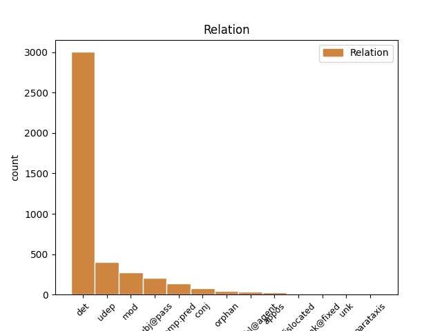
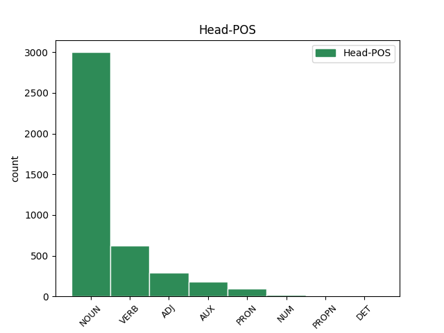
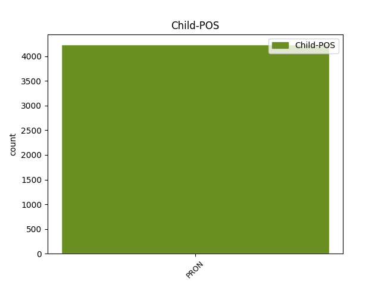

Distribution of features within this leaf



Agreement Rules sorted by frequency.
- When the dependent token is the determiner(det) of the head token, and the dependent token is PRON.
1 καὶ _ _ _ _ 0 _ _ _
2 ἐάν _ _ _ _ 0 _ _ _
3 τις _ _ _ _ 0 _ _ _
4 ἀφέλῃ _ _ _ _ 0 _ _ _
5 ἀπὸ _ _ _ _ 0 _ _ _
6 τῶν _ _ _ _ 0 _ _ _
7 λόγων _ _ _ _ 0 _ _ _
8 τοῦ _ _ _ _ 0 _ _ _
9 βιβλίου _ _ _ _ 0 _ _ _
10 τῆς _ _ _ _ 0 _ _ _
11 προφητείας _ _ _ _ 0 _ _ _
12 ταύτης _ _ _ _ 0 _ _ _
13 ἀφελεῖ _ _ _ _ 0 _ _ _
14 ὁ _ _ _ _ 0 _ _ _
15 θεὸς _ _ _ _ 0 _ _ _
16 τὸ _ _ _ _ 0 _ _ _
17 μέρος μέρος NOUN Nb Case=Acc|Gender=Neut|Number=Sing 0 _ _ _
18 αὐτοῦ αὐτός PRON Pp Case=Gen|Gender=Masc|Number=Sing|Person=3|PronType=Prs 17 det _ ref=REV_22.19
19 ἀπὸ _ _ _ _ 0 _ _ _
20 τοῦ _ _ _ _ 0 _ _ _
21 ξύλου _ _ _ _ 0 _ _ _
22 τῆς _ _ _ _ 0 _ _ _
23 ζωῆς _ _ _ _ 0 _ _ _
24 καὶ _ _ _ _ 0 _ _ _
25 ἐκ _ _ _ _ 0 _ _ _
26 τῆς _ _ _ _ 0 _ _ _
27 πόλεως _ _ _ _ 0 _ _ _
28 τῆς _ _ _ _ 0 _ _ _
29 ἁγίας _ _ _ _ 0 _ _ _
30 τῶν _ _ _ _ 0 _ _ _
31 γεγραμμένων _ _ _ _ 0 _ _ _
32 ἐν _ _ _ _ 0 _ _ _
33 τῷ _ _ _ _ 0 _ _ _
34 βιβλίῳ _ _ _ _ 0 _ _ _
35 τούτῳ _ _ _ _ 0 _ _ _
1 ἐπίστευσεν _ _ _ _ 0 _ _ _
2 δὲ _ _ _ _ 0 _ _ _
3 Ἀβραὰμ _ _ _ _ 0 _ _ _
4 τῷ _ _ _ _ 0 _ _ _
5 θεῷ _ _ _ _ 0 _ _ _
6 καὶ _ _ _ _ 0 _ _ _
7 ἐλογίσθη λογίζομαι VERB V- Aspect=Perf|Mood=Ind|Number=Sing|Person=3|Tense=Past|VerbForm=Fin|Voice=Pass 0 _ _ _
8 αὐτῷ αὐτός PRON Pp Case=Dat|Gender=Masc|Number=Sing|Person=3|PronType=Prs 7 udep _ ref=JAS_2.23
9 εἰς _ _ _ _ 0 _ _ _
10 δικαιοσύνην _ _ _ _ 0 _ _ _
1 τίς τίς PRON Pi Case=Nom|Gender=Masc|Number=Sing|PronType=Int 4 subj@pass _ ref=REV_15.4
2 οὐ _ _ _ _ 0 _ _ _
3 μὴ _ _ _ _ 0 _ _ _
4 φοβηθῇ φοβέω VERB V- Aspect=Perf|Mood=Sub|Number=Sing|Person=3|Tense=Past|VerbForm=Fin|Voice=Pass 0 _ _ _
5 κύριε _ _ _ _ 0 _ _ _
6 καὶ _ _ _ _ 0 _ _ _
7 δοξάσει _ _ _ _ 0 _ _ _
8 τὸ _ _ _ _ 0 _ _ _
9 ὄνομά _ _ _ _ 0 _ _ _
10 σου _ _ _ _ 0 _ _ _
1 οὗτοι _ _ _ _ 0 _ _ _
2 οἱ _ _ _ _ 0 _ _ _
3 περιβεβλημένοι _ _ _ _ 0 _ _ _
4 τὰς _ _ _ _ 0 _ _ _
5 στολὰς _ _ _ _ 0 _ _ _
6 τὰς _ _ _ _ 0 _ _ _
7 λευκὰς _ _ _ _ 0 _ _ _
8 τίνες τίς PRON Pi Case=Nom|Gender=Masc|Number=Plur|PronType=Int 9 comp:pred _ ref=REV_7.13
9 εἰσὶν εἰμί AUX V- Mood=Ind|Number=Plur|Person=3|Tense=Pres|VerbForm=Fin|Voice=Act 0 _ _ _
10 καὶ _ _ _ _ 0 _ _ _
11 πόθεν _ _ _ _ 0 _ _ _
12 ἦλθον _ _ _ _ 0 _ _ _
1 οἱ _ _ _ _ 0 _ _ _
2 ἔμποροι _ _ _ _ 0 _ _ _
3 τούτων _ _ _ _ 0 _ _ _
4 οἱ _ _ _ _ 0 _ _ _
5 πλουτήσαντες _ _ _ _ 0 _ _ _
6 ἀπ’ _ _ _ _ 0 _ _ _
7 αὐτῆς _ _ _ _ 0 _ _ _
8 ἀπὸ _ _ _ _ 0 _ _ _
9 μακρόθεν _ _ _ _ 0 _ _ _
10 στήσονται _ _ _ _ 0 _ _ _
11 διὰ _ _ _ _ 0 _ _ _
12 τὸν _ _ _ _ 0 _ _ _
13 φόβον _ _ _ _ 0 _ _ _
14 τοῦ _ _ _ _ 0 _ _ _
15 βασανισμοῦ βασανισμός NOUN Nb Case=Gen|Gender=Masc|Number=Sing 0 _ _ _
16 αὐτῆς αὐτός PRON Pp Case=Gen|Gender=Fem|Number=Sing|Person=3|PronType=Prs 15 mod _ ref=REV_18.15
17 κλαίοντες _ _ _ _ 0 _ _ _
18 καὶ _ _ _ _ 0 _ _ _
19 πενθοῦντες _ _ _ _ 0 _ _ _
20 λέγοντες _ _ _ _ 0 _ _ _
1 καὶ _ _ _ _ 0 _ _ _
2 ἡ _ _ _ _ 0 _ _ _
3 πόλις _ _ _ _ 0 _ _ _
4 τετράγωνος _ _ _ _ 0 _ _ _
5 κεῖται κεῖμαι VERB V- Mood=Ind|Number=Sing|Person=3|Tense=Pres|VerbForm=Fin|Voice=Mid 0 _ _ _
6 καὶ _ _ _ _ 0 _ _ _
7 τὸ _ _ _ _ 0 _ _ _
8 μῆκος _ _ _ _ 0 _ _ _
9 αὐτῆς _ _ _ _ 0 _ _ _
10 ὅσον ὅσος PRON Pr Case=Nom|Gender=Neut|Number=Sing|PronType=Rel 5 conj _ ref=REV_21.16
11 τὸ _ _ _ _ 0 _ _ _
12 πλάτος _ _ _ _ 0 _ _ _
1 ῥύσεταί _ _ _ _ 0 _ _ _
2 με _ _ _ _ 0 _ _ _
3 ὁ _ _ _ _ 0 _ _ _
4 κύριος _ _ _ _ 0 _ _ _
5 ἀπὸ _ _ _ _ 0 _ _ _
6 παντὸς _ _ _ _ 0 _ _ _
7 ἔργου _ _ _ _ 0 _ _ _
8 πονηροῦ _ _ _ _ 0 _ _ _
9 καὶ _ _ _ _ 0 _ _ _
10 σώσει _ _ _ _ 0 _ _ _
11 εἰς _ _ _ _ 0 _ _ _
12 τὴν _ _ _ _ 0 _ _ _
13 βασιλείαν _ _ _ _ 0 _ _ _
14 αὐτοῦ _ _ _ _ 0 _ _ _
15 τὴν _ _ _ _ 0 _ _ _
16 ἐπουράνιον _ _ _ _ 0 _ _ _
17 ᾧ ὅς PRON Pr Case=Dat|Gender=Masc|Number=Sing|PronType=Rel 19 orphan _ ref=2TIM_4.18
18 ἡ _ _ _ _ 0 _ _ _
19 δόξα δόξα NOUN Nb Case=Nom|Gender=Fem|Number=Sing 0 _ _ _
20 εἰς _ _ _ _ 0 _ _ _
21 τοὺς _ _ _ _ 0 _ _ _
22 αἰῶνας _ _ _ _ 0 _ _ _
23 τῶν _ _ _ _ 0 _ _ _
24 αἰώνων _ _ _ _ 0 _ _ _
1 καὶ _ _ _ _ 0 _ _ _
2 ποιεῖ _ _ _ _ 0 _ _ _
3 τὴν _ _ _ _ 0 _ _ _
4 γῆν _ _ _ _ 0 _ _ _
5 καὶ _ _ _ _ 0 _ _ _
6 τοὺς _ _ _ _ 0 _ _ _
7 ἐν _ _ _ _ 0 _ _ _
8 αὐτῇ _ _ _ _ 0 _ _ _
9 κατοικοῦντας _ _ _ _ 0 _ _ _
10 ἵνα _ _ _ _ 0 _ _ _
11 προσκυνήσουσιν _ _ _ _ 0 _ _ _
12 τὸ _ _ _ _ 0 _ _ _
13 θηρίον _ _ _ _ 0 _ _ _
14 τὸ _ _ _ _ 0 _ _ _
15 πρῶτον _ _ _ _ 0 _ _ _
16 οὗ ὅς PRON Pr Case=Gen|Gender=Neut|Number=Sing|PronType=Rel 0 _ _ _
17 ἐθεραπεύθη _ _ _ _ 0 _ _ _
18 ἡ _ _ _ _ 0 _ _ _
19 πληγὴ _ _ _ _ 0 _ _ _
20 τοῦ _ _ _ _ 0 _ _ _
21 θανάτου _ _ _ _ 0 _ _ _
22 αὐτοῦ αὐτός PRON Pp Case=Gen|Gender=Neut|Number=Sing|Person=3|PronType=Prs 16 appos _ ref=REV_13.12
1 καὶ _ _ _ _ 0 _ _ _
2 ἰδοὺ _ _ _ _ 0 _ _ _
3 οὐδὲν _ _ _ _ 0 _ _ _
4 ἄξιον _ _ _ _ 0 _ _ _
5 θανάτου _ _ _ _ 0 _ _ _
6 ἐστὶν _ _ _ _ 0 _ _ _
7 πεπραγμένον πράσσω VERB V- Aspect=Perf|Case=Nom|Gender=Neut|Number=Sing|Tense=Past|VerbForm=Part|Voice=Pass 0 _ _ _
8 αὐτῷ αὐτός PRON Pp Case=Dat|Gender=Masc|Number=Sing|Person=3|PronType=Prs 7 comp:obl@agent _ ref=LUKE_23.15
1 οὐχ _ _ _ _ 0 _ _ _
2 ὑμεῖς _ _ _ _ 0 _ _ _
3 με _ _ _ _ 0 _ _ _
4 ἐξελέξασθε _ _ _ _ 0 _ _ _
5 ἀλλ’ _ _ _ _ 0 _ _ _
6 ἐγὼ _ _ _ _ 0 _ _ _
7 ἐξελεξάμην _ _ _ _ 0 _ _ _
8 ὑμᾶς _ _ _ _ 0 _ _ _
9 καὶ _ _ _ _ 0 _ _ _
10 ἔθηκα _ _ _ _ 0 _ _ _
11 ὑμᾶς _ _ _ _ 0 _ _ _
12 ἵνα _ _ _ _ 0 _ _ _
13 ὑμεῖς _ _ _ _ 0 _ _ _
14 ὑπάγητε _ _ _ _ 0 _ _ _
15 καὶ _ _ _ _ 0 _ _ _
16 καρπὸν _ _ _ _ 0 _ _ _
17 φέρητε _ _ _ _ 0 _ _ _
18 καὶ _ _ _ _ 0 _ _ _
19 ὁ _ _ _ _ 0 _ _ _
20 καρπὸς _ _ _ _ 0 _ _ _
21 ὑμῶν _ _ _ _ 0 _ _ _
22 μένῃ _ _ _ _ 0 _ _ _
23 ἵνα _ _ _ _ 0 _ _ _
24 ὅ ὅστις PRON Pr Case=Acc|Gender=Neut|Number=Sing|PronType=Rel 0 _ _ _
25 τι τι PRON Pr Case=Acc|Gender=Neut|Number=Sing|PronType=Rel 24 unk@fixed _ ref=JOHN_15.16
26 ἂν _ _ _ _ 0 _ _ _
27 αἰτήσητε _ _ _ _ 0 _ _ _
28 τὸν _ _ _ _ 0 _ _ _
29 πατέρα _ _ _ _ 0 _ _ _
30 ἐν _ _ _ _ 0 _ _ _
31 τῷ _ _ _ _ 0 _ _ _
32 ὀνόματί _ _ _ _ 0 _ _ _
33 μου _ _ _ _ 0 _ _ _
34 δῷ _ _ _ _ 0 _ _ _
35 ὑμῖν _ _ _ _ 0 _ _ _
1 ἐκεῖνός _ _ _ _ 0 _ _ _
2 ἐστιν _ _ _ _ 0 _ _ _
3 ᾧ ὅς PRON Pr Case=Dat|Gender=Masc|Number=Sing|PronType=Rel 9 dislocated _ ref=JOHN_13.26
4 ἐγὼ _ _ _ _ 0 _ _ _
5 βάψω _ _ _ _ 0 _ _ _
6 τὸ _ _ _ _ 0 _ _ _
7 ψωμίον _ _ _ _ 0 _ _ _
8 καὶ _ _ _ _ 0 _ _ _
9 δώσω δίδωμι VERB V- Mood=Ind|Number=Sing|Person=1|Tense=Fut|VerbForm=Fin|Voice=Act 0 _ _ _
10 αὐτῷ _ _ _ _ 0 _ _ _
Disagree Examples:
1 ταύτας _ _ _ _ 0 _ _ _
2 στάσας _ _ _ _ 0 _ _ _
3 κατά _ _ _ _ 0 _ _ _
4 πρύμνην _ _ _ _ 0 _ _ _
5 τῆς _ _ _ _ 0 _ _ _
6 νεὸς _ _ _ _ 0 _ _ _
7 ὠνέεσθαι _ _ _ _ 0 _ _ _
8 τῶν _ _ _ _ 0 _ _ _
9 φορτίων _ _ _ _ 0 _ _ _
10 τῶν ὁ PRON Pr Case=Gen|Gender=Neut|Number=Plur|PronType=Rel 13 mod _ ref=1.1.4
11 σφι _ _ _ _ 0 _ _ _
12 ἦν _ _ _ _ 0 _ _ _
13 θυμός θυμός NOUN Nb Case=Nom|Gender=Masc|Number=Sing 0 _ _ _
14 μάλιστα _ _ _ _ 0 _ _ _
1 ἐούσης _ _ _ _ 0 _ _ _
2 ὁρτῆς _ _ _ _ 0 _ _ _
3 τῇ _ _ _ _ 0 _ _ _
4 Ἥρῃ _ _ _ _ 0 _ _ _
5 τοῖσι _ _ _ _ 0 _ _ _
6 Ἀργείοισι _ _ _ _ 0 _ _ _
7 ἔδεε _ _ _ _ 0 _ _ _
8 πάντως _ _ _ _ 0 _ _ _
9 τὴν _ _ _ _ 0 _ _ _
10 μητέρα μήτηρ NOUN Nb Case=Acc|Gender=Fem|Number=Sing 0 _ _ _
11 αὐτῶν αὐτός PRON Pp Case=Gen|Gender=Masc|Number=Plur|Person=3|PronType=Prs 10 det _ ref=1.31.2
12 ζεύγεϊ _ _ _ _ 0 _ _ _
13 κομισθῆναι _ _ _ _ 0 _ _ _
14 ἐς _ _ _ _ 0 _ _ _
15 τὸ _ _ _ _ 0 _ _ _
16 ἱρόν _ _ _ _ 0 _ _ _
1 ἐπὶ _ _ _ _ 0 _ _ _
2 τῆς _ _ _ _ 0 _ _ _
3 ἁμάξης _ _ _ _ 0 _ _ _
4 δέ _ _ _ _ 0 _ _ _
5 σφι σφεῖς PRON Pp Case=Dat|Gender=Masc|Number=Plur|Person=3|PronType=Prs 8 det _ ref=1.31.2
6 ὠχέετο _ _ _ _ 0 _ _ _
7 ἡ _ _ _ _ 0 _ _ _
8 μήτηρ μήτηρ NOUN Nb Case=Nom|Gender=Fem|Number=Sing 0 _ _ _
1 ταῦτα _ _ _ _ 0 _ _ _
2 δέ _ _ _ _ 0 _ _ _
3 σφι σφεῖς PRON Pp Case=Dat|Gender=Masc|Number=Plur|Person=3|PronType=Prs 14 comp:pred _ ref=1.31.3
4 ποιήσασι _ _ _ _ 0 _ _ _
5 καὶ _ _ _ _ 0 _ _ _
6 ὀφθεῖσι _ _ _ _ 0 _ _ _
7 ὑπὸ _ _ _ _ 0 _ _ _
8 τῆς _ _ _ _ 0 _ _ _
9 πανηγύριος _ _ _ _ 0 _ _ _
10 τελευτὴ _ _ _ _ 0 _ _ _
11 τοῦ _ _ _ _ 0 _ _ _
12 βίου _ _ _ _ 0 _ _ _
13 ἀρίστη _ _ _ _ 0 _ _ _
14 ἐπεγένετο ἐπιγίγνομαι VERB V- Aspect=Perf|Mood=Ind|Number=Sing|Person=3|Tense=Past|VerbForm=Fin|Voice=Mid 0 _ _ _
1 Ἀργεῖοι _ _ _ _ 0 _ _ _
2 μὲν _ _ _ _ 0 _ _ _
3 γὰρ _ _ _ _ 0 _ _ _
4 περιστάντες _ _ _ _ 0 _ _ _
5 ἐμακάριζον _ _ _ _ 0 _ _ _
6 τῶν _ _ _ _ 0 _ _ _
7 νεηνιέων _ _ _ _ 0 _ _ _
8 τὴν _ _ _ _ 0 _ _ _
9 ῥώμην _ _ _ _ 0 _ _ _
10 αἱ _ _ _ _ 0 _ _ _
11 δὲ _ _ _ _ 0 _ _ _
12 Ἀργεῖαι _ _ _ _ 0 _ _ _
13 τὴν _ _ _ _ 0 _ _ _
14 μητέρα μήτηρ NOUN Nb Case=Acc|Gender=Fem|Number=Sing 0 _ _ _
15 αὐτῶν αὐτός PRON Pp Case=Gen|Gender=Masc|Number=Plur|Person=3|PronType=Prs 14 det _ ref=1.31.3